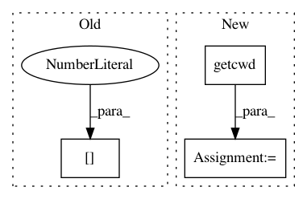

2399144826ce08e9052859539450fd779678d4de,tflearn/helpers/trainer.py,Trainer,save,#Trainer#Any#Any#,357
Before Change
// Temp workaround for tensorflow 0.7+ dict proto serialization issue
obj_lists = utils.fix_saver()
// TF 0.12 Fix
if not model_file[0] in ["/", "~"]:
model_file = "./" + model_file
self.saver.save(self.session, model_file, global_step=global_step)
utils.fix_saver(obj_lists)
After Change
obj_lists = utils.fix_saver()
// TF 0.12 Fix
if not os.path.isabs(model_file):
model_file = os.path.abspath(os.path.join(os.getcwd(), model_file))
self.saver.save(self.session, model_file, global_step=global_step)
utils.fix_saver(obj_lists)
def restore(self, model_file, trainable_variable_only=False, variable_name_map=None, scope_for_restore=None,
In pattern: SUPERPATTERN
Frequency: 3
Non-data size: 3
Instances
Project Name: tflearn/tflearn
Commit Name: 2399144826ce08e9052859539450fd779678d4de
Time: 2016-12-19
Author: aymeric.damien@gmail.com
File Name: tflearn/helpers/trainer.py
Class Name: Trainer
Method Name: save
Project Name: OpenNMT/OpenNMT-py
Commit Name: 8bae2f95f5d6da9e770d85b75d74e2343db5ea29
Time: 2018-06-08
Author: nikhilweee@gmail.com
File Name: onmt/translate/translator.py
Class Name: Translator
Method Name: _report_bleu
Project Name: tflearn/tflearn
Commit Name: 2399144826ce08e9052859539450fd779678d4de
Time: 2016-12-19
Author: aymeric.damien@gmail.com
File Name: tflearn/helpers/trainer.py
Class Name: Trainer
Method Name: restore